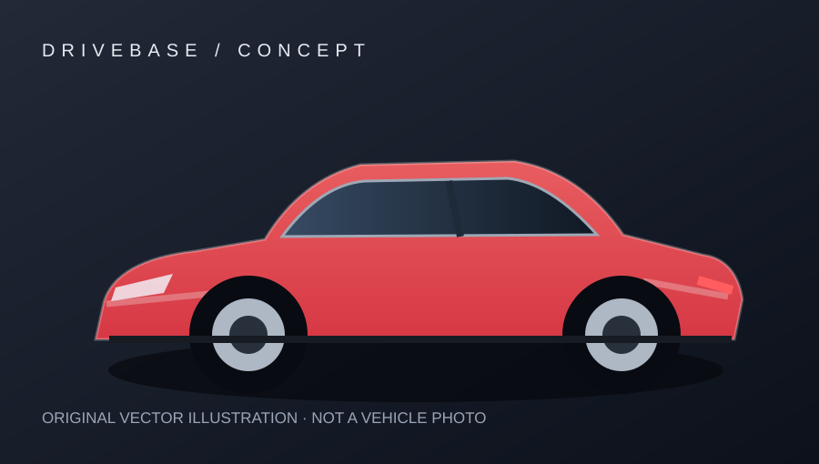

Car profile
車系資訊
Key specifications
核心規格
詳細技術數據
數值只呈現已確認來源；待查證欄位不會由 AI 自行補齊。
| 規格項目 | 資料 |
|---|
來源與查證紀錄
本網站為教學展示專案。資料以標示的年式、版本與來源為準；原廠可能更新規格，購車前請向官方確認。

數值只呈現已確認來源；待查證欄位不會由 AI 自行補齊。
| 規格項目 | 資料 |
|---|
本網站為教學展示專案。資料以標示的年式、版本與來源為準；原廠可能更新規格，購車前請向官方確認。